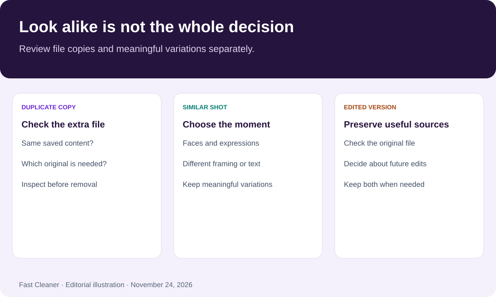
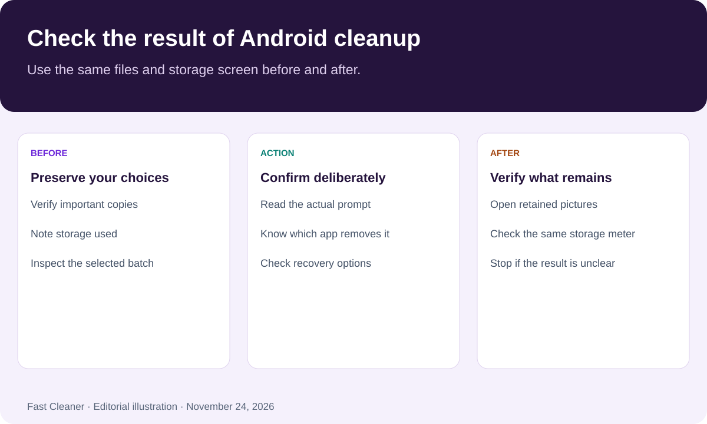

How should you remove duplicate photos on Android?
Back up important pictures, inspect the duplicate groups, and remove only copies you do not want. Files by Google has a documented duplicate-files workflow. Fast Cleaner for Android offers another way to review duplicate and similar photos. Match the instructions to your actual app and Android version.
Two imported copies and two different shots of a person are different choices. Keep the expression, edit, or original you actually need; do not accept a group solely because its members look alike.
Platform and review scope: This guide covers Android. Fast Cleaner is listed on Google Play as Duplicate Photo Cleaner AI by CrocApps and is free on Android, as confirmed by the developer. Fast Cleaner publishes this guide; product functions below come from published descriptions, not a hands-on comparison. iPhone purchases and Apple Photos instructions do not apply here.
Prepare a small review batch
Preserve an independent copy of irreplaceable media and confirm it opens. Check whether the originals are on the phone, an SD card, or only in a cloud service. A local scan cannot evaluate every file in an account it cannot access.
Note your device’s storage usage before making changes. For your first pass, choose pictures you can inspect comfortably. Avoid importing and deleting a whole library just to test a matching tool.
Use Files by Google for identified duplicate files
Follow Google’s duplicate-file instructions for your current version:
- Open Files by Google and go to Menu → Clean.
- Find Duplicate files and choose Select files.
- Inspect the candidates; Google recommends keeping the file marked Original.
- Select only the copies you want removed, then read and confirm the Move to Trash action.
This describes the duplicate-files action. Other categories can behave differently; follow the specific prompt instead of assuming a universal recovery window.
Review duplicates and similar shots with Fast Cleaner
Duplicate Photo Cleaner AI by CrocApps is the Android edition of Fast Cleaner. Its published description includes duplicate and similar-photo groups and review before removal. The app is free on Android; iPhone subscription prices do not apply.
- Check the Android photo access you are comfortable granting.
- Open the available duplicate or similar-photo review workflow.
- Inspect faces, crops, edits, and details; change the selection to keep meaningful versions.
- Read the actual removal confirmation before approving a small batch.
Feature names can vary by version. These are review principles, not a verified tap-by-tap test of the Android interface. We make no claim that it detects more matches or works faster than the other route.
Separate duplicate files from similar pictures
| Example | Question to answer | Practical next step |
|---|---|---|
| Same file saved twice | Do both copies serve a purpose? | Keep the needed original and review the extra copy |
| Two expressions in a burst | Which moment do you want? | Compare the images rather than treating all as duplicates |
| An edited copy and its source | Will you need the original for editing? | Preserve both if they serve different purposes |
| A backed-up photo on the device | Do you want local and offline access? | Treat local-copy removal separately from unwanted-photo deletion |


If expected pictures are missing
Inspect the app’s Android permissions and compare the visible selection with the files you intended to review. Selected-media access, a cloud-only file, and a missing match are different situations. Do not grant broader access automatically just to force a result.
If you use Google Photos, its Free up space feature removes eligible backed-up local copies. It is not evidence that a duplicate cleaner has evaluated the same library or chosen the right pictures.
Check recovery and actual storage
Read the app’s deletion prompt and inspect the relevant recovery controls. Android gallery apps and file tools do not all share Apple Photos’ recovery rules. Keep the independent backup until you have checked the remaining pictures.


For choosing a tool, read our Files by Google vs Fast Cleaner comparison. For another platform, use the separate iPhone duplicate-photo guide.
Review your gallery on Android
Explore duplicate and similar-photo review, screenshots, blurry images, and large-video discovery in the Android listing.
Common questions
Do I need to pay to review duplicates on Android?
The Android Fast Cleaner edition is free, and Files by Google documents another duplicate-files route. Confirm the current app and action you are using.
Are similar photos safe to remove automatically?
Review them. Different expressions, edits, and crops can preserve information you want.
Can I assume a 30-day recovery window?
No. Follow the removal and recovery information for the Android app and action you actually use.
Will this delete cloud photos too?
It depends on the app, action, and sync setup. Read the confirmation and preserve independent copies rather than assuming local and cloud behavior is identical.
Sources and review method
Reviewed November 24, 2026. App listings can be cached; their descriptions are developer statements. Platform instructions document the named action, not a test of a third-party app. Android models, menus, permission options, and recovery controls can differ.